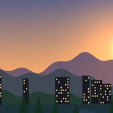

稳定器

稳定抖动的视频图层。选择低、中或高，片段的镜头移动只测量一次并随项目保存；之后画面会反向移动和旋转以抵消抖动，并只放大到刚好遮住边缘。级别越高，画面越稳。
设置
| 设置项 | 类型 | 范围 | 默认值 |
|---|---|---|---|
| 稳定 | 选项 | 关闭，低，中，高 | 关闭 |

稳定抖动的视频图层。选择低、中或高，片段的镜头移动只测量一次并随项目保存；之后画面会反向移动和旋转以抵消抖动，并只放大到刚好遮住边缘。级别越高，画面越稳。
| 设置项 | 类型 | 范围 | 默认值 |
|---|---|---|---|
| 稳定 | 选项 | 关闭，低，中，高 | 关闭 |